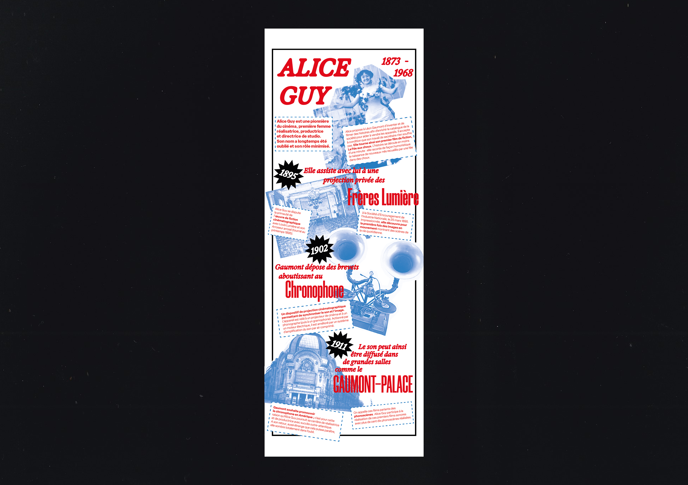
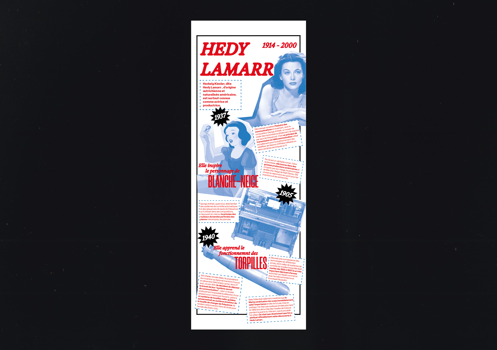
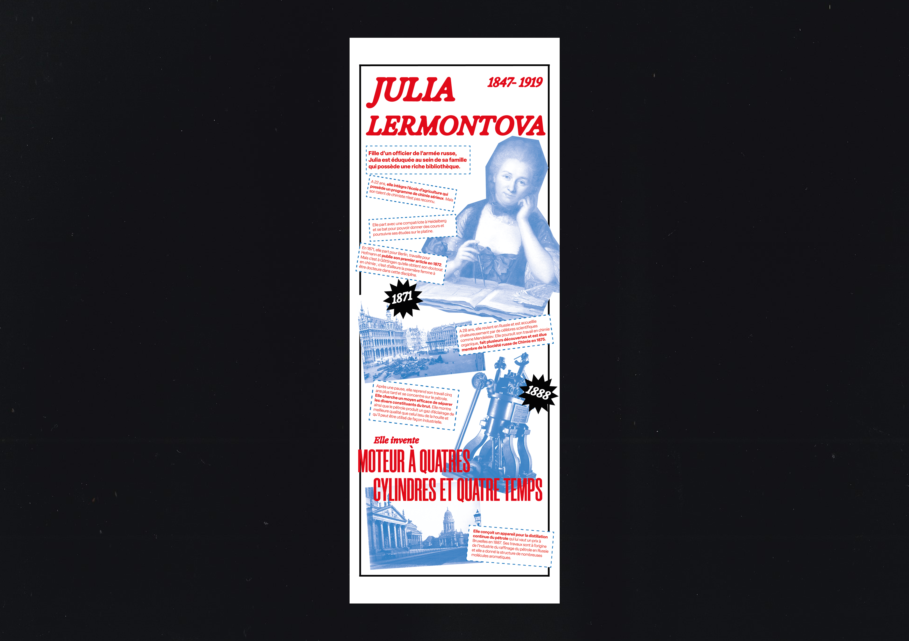
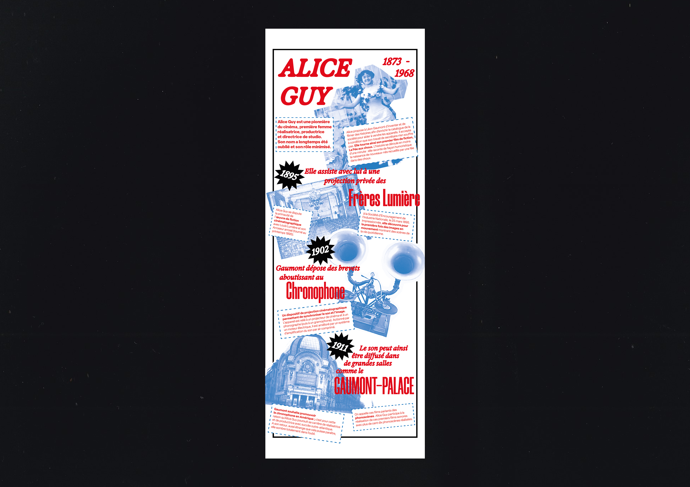
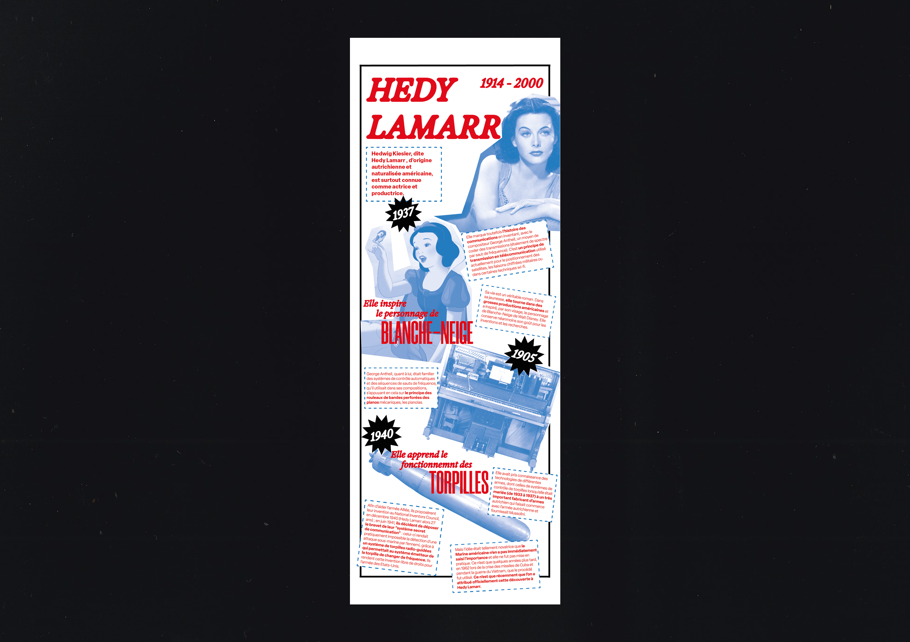
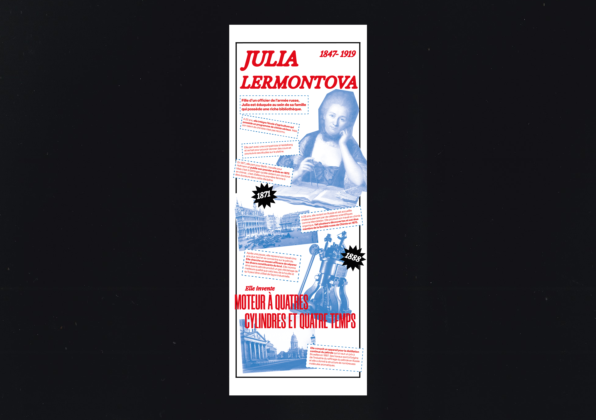

Où sont elles ?
← retour
Commande du musée des arts et métiers, L’objectif était de revaloriser les inventions et le travail des femmes représentées dans ses collections, reconnaissant ainsi l’importance de leur contribution historique souvent négligée ou minimisée.
Le parcours de ses inventrices regorge d’anecdote hors du commun à mettre en avant.
J’ai hiérarchisé les visuels et les textes mis à notre disposition, de telle manière à ce que le visiteur soit happé par une image ou une phrase pour que dans un premier temps une information suscite sa curiosité et son envie d’en savoir plus.
 




